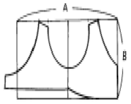

한복기능사 (2005-01-30 기출문제)
1과목: 임의 구분
1. 평직의 장점에 해당되는 것은?
- 얇고, 제직이 간단하며 실용적이다.
- 조직점이 많아 구김이 잘 생긴다.
- 표면이 거칠다.
- 광택이 많다.
(정답률: 54%)

2. 벌키가공을 하여 보온성을 높여 주는 섬유는?
- 모섬유
- 면섬유
- 아크릴섬유
- 견섬유
(정답률: 42%)
3. 다음 중 여름철의 옷감으로 가장 많이 쓰이는 것은?
- 숙고사, 갑사, 공단 등
- 옥양목, 포플린, 오간디 등
- 생고사, 은조사, 공단 등
- 삼베, 모시, 안동포 등
(정답률: 알수없음)
4. 비단(견)이 염기성 물감이나 산성물감에 염색이 잘되는 것은 섬유의 어떤 성분 때문인가?
- 피브로인 중의 아미노산
- 단백질 중의 탄소
- 세리신 중의 질소
- 피브로인 중의 탄소
(정답률: 알수없음)
5. 다음 섬유들의 공통된 성능은? (단, 양모, 비스코스레이온, 아세테이트)
- 알칼리에 강하다.
- 보온성이 크다.
- 내구성이 크다.
- 강도가 약하다.
(정답률: 알수없음)
6. 레이온의 강도, 내수성을 증가시켜 면 섬유 대용으로 사용되는 섬유는?
- 비스코스 레이온
- 레이온 스테이플
- 아크릴
- 폴리노직 레이온
(정답률: 알수없음)
7. 내일광성이 가장 우수한 섬유는?
- 면섬유
- 마섬유
- 폴리아크릴섬유
- 폴리에스테르섬유
(정답률: 알수없음)
8. 다음 중 무명섬유의 성질로 옳은 것은?
- 산에 약하고 알칼리에 강하다.
- 산에 강하고 알칼리에 약하다.
- 산, 알칼리에 모두 강하다.
- 산, 알칼리에 모두 약하다.
(정답률: 알수없음)
9. 강연사로 짠 직물의 특성은?
- 때가 적게 오염된다.
- 부드럽고 신축성이 있다.
- 까실까실하고 딱딱하다.
- 광택이 있고 보온성이 있다.
(정답률: 알수없음)
10. 섬유가 장 시간 대기중에 노출되어 햇빛, 공기, 비 등의 작용을 받으며 점차 강도가 떨어져 약해지는 성질은?
- 취화
- 내성
- 대전성
- 열가소성
(정답률: 알수없음)
11. 한복의 구성상 한복의 미가 아닌 것은?
- 곧은 선과 은은히 흐르는 곡선으로 이루어지는 선의 흐름이다.
- 배색은 음양오행설을 바탕으로 한 색채의 조화이다.
- 한복의 선은 배래선과 같은 곡선으로만 이루어진다.
- 저고리와 치마의 배색관계는 음과 양의 조화를 바탕에 두고 있다.
(정답률: 알수없음)
12. 의복의 용도, 착용자의 개성에 따라 강조가 부적절하게 사용된 것은?
- 약한 강조점-통근복
- 약한 강조점-교복
- 강한 강조점-정장
- 강한 강조점-일상복
(정답률: 알수없음)
13. 옥을 장신구에 사용하기 시작한 것은 언제부터인가?
- 철기시대
- 석기시대
- 청동기시대
- 신라시대
(정답률: 알수없음)
14. 색의 대비란?
- 색과 색을 배합하여 실제와는 다른 색으로 어울리게 하는 것
- 성질이 비슷한 두가지 정도의 색을 섞었을 때 실제와는 다른 색으로 변해 보이는 현상
- 어떤 색이 다른 색의 영향을 받아서 실제와는 다른 색으로 변해 보이는 현상
- 서로 반대되는 색끼리 섞었을 때 실제와는 다른 색으로 변해 보이는 현상
(정답률: 알수없음)
15. 색동이 쓰여지지 않은 곳은?
- 까치 두루마기
- 원삼
- 활옷
- 당의
(정답률: 알수없음)
16. 남자 한복 입는 방법으로 잘못된 것은?
- 속적삼 위에 저고리를 입는다.
- 저고리 위에 조끼를 입고, 그 위에 마고자를 입는다.
- 대님은 매듭이 바깥쪽 복사뼈 위에 놓이도록 맨다.
- 웃옷은 저고리 → 조끼 → 마고자 → 두루마기 순으로 입는다.
(정답률: 알수없음)
17. 키가 크고 마른 체형에 알맞은 것은?
- 저고리의 길이를 조금 길게 하고 품은 넉넉하게 한다.
- 저고리의 품과 길이를 알맞게 한다.
- 저고리의 면적이 좁아 보이도록 곁마기를 단다.
- 치맛단에 장식 또는 금박을 하지 아니한다.
(정답률: 60%)
18. 색동저고리나 무지기치마가 주는 형태상의 특징은 디자인의 원리 중 어디에 속하는가?
- 점진적인 강조
- 점진적인 균형
- 균일한 리듬
- 불규칙적인 비례
(정답률: 알수없음)
19. 기본 색명과 색상, 명도, 채도에 관해 약속하여 만든 색의 이름을 일컬어 무엇이라 하는가?
- 관용색명
- 고유색명
- 일반색명
- 색조
(정답률: 알수없음)
20. 우리 옷에서 전통적으로 내려오는 남자한복의 배색으로 가장 적당한 것은?
- 미색바지 쑥색저고리 녹색조끼
- 꽃분홍바지 저고리 청옥색조끼
- 옥색바지 저고리 청옥색조끼
- 옥색바지 회색저고리 남색조끼
(정답률: 알수없음)
2과목: 임의 구분
21. 건식 세탁의 단점은?
- 옷감의 색깔, 형태 등이 쉽게 변할 염려가 있다.
- 건조가 빠르지 아니하다.
- 색상에 관계 없이 동시에 세탁을 할 수 없다.
- 수용성 때가 깨끗이 빠지지 않는다.
(정답률: 알수없음)
22. 치마 주름잡기에 대한 설명 중 잘못된 것은?
- 주름을 잡을 부분은 안과 겉감이 밀리지 않도록 성글게 박아준다.
- 주름은 안자락을 향하도록 잡는다.
- 주름을 안자락은 처음부터 잡고 겉자락은 끝에서 8∼10cm 정도까지는 잡지 아니한다.
- 주름은 일정한 간격으로 잡는다.
(정답률: 알수없음)
23. 저고리 동정 다는 방법 중 옳지 않은 것은?
- 동정은 깃머리에서 깃 너비 길이만큼 떨어진 곳에서부터 안 깃 끝 2.5cm 떨어진 곳 까지 단다.
- 동정은 가는 바늘과 가는 실로 달아야 좋다.
- 동정 나비는 깃 너비의 2/5 정도가 좋다.
- 동정을 박은 후 안감 깃 쪽으로 넘겨 꺾고, 겉감 깃쪽에서 3∼4㎝ 땀으로 뜬다.
(정답률: 알수없음)
24. 남자 저고리를 만드는 방법이다. 올바르지 못한 것은?
- 젊은 층의 옷길이는 약간 짧게 하고, 노인 층은 조금 길게 한다.
- 저고리의 치수는 체형과 연령, 기호 등에 따라 약간의 차이가 있다.
- 어깨솔기는 앞 뒤길의 겉과 안을 맞대어 놓고 고대점까지 되돌아 박고, 시접은 앞길쪽으로 꺾어 넘긴다.
- 소매달기는 길의 어깨선과 소매의 중심을 잘 맞춘 후 진동선이 어긋나지 않게 시침하여 박는데 진동 치수까지만 박고 풀리지 않게 되돌아 박는다.
(정답률: 알수없음)
25. 다음 그림의 바늘 구멍에서 B의 위치 가까이로 바늘이 오면 주로 일어나는 현상은?
- 땀새가 뜬다.
- 실이 끊어진다.
- 북집에 실이 엉킨다.
- 바늘이 부러지기 쉽다.
(정답률: 알수없음)
26. 한복의 빨래 방법으로서 옳지 않는 것은?
- 우선 미지근한 물에 담가 때를 불리고 물속에서 2-3회 흔들어 건진다.
- 미지근한 물에 세제를 녹여 빨리 세탁하고, 즉시 건져야 구겨지지 않는다.
- 빨래가 끝나면 3,4회 정도 맑은 물에 헹구어 곱게 접어 소쿠리에 담아 물을 뺀다.
- 말릴때는 바람이 잘 통하는 그늘에서 말린다.
(정답률: 알수없음)
27. 염색할 때 넣는 로드유의 용도는?
- 견뢰도 증진제
- 색상 환원제
- 염색 보조제
- 염색 매염제
(정답률: 37%)
28. 일반 금박으로 설명이 옳은 것은?
- 물세탁을 할 수 없고, 반드시 드라이를 해야한다.
- 공정이 까다롭고, 시간이 많이 걸린다.
- 조선왕조 말기까지 상류 사회에서만 사용하였다.
- 가격이 싸며 물세탁도 가능하다.
(정답률: 알수없음)
29. 여자 성인저고리의 기초선 그리기에서 잘못된 부분은?
- 앞길이는 뒷길이에 앞 처짐분 3∼4cm를 더한다.
- 품은 B/4로 하는데 여기서 B는 윗가슴둘레이다.
- 화장에서 품을 뺀 치수가 소매길이이고, 진동은 B/2로 한다.
- 고대의 치수는 B/10-0.5cm 정도로 한다.
(정답률: 알수없음)
30. 저고리 안감의 바느질은?
- 겉감과 모두 같게 하면 된다.
- 겉감과 모두 같게 하되 솔기만 반대로 꺾는다.
- 겉감과 모두 같게하고, 겉섶과 안섶의 위치만 바꾸어 단다.
- 겉감과 모두 반대로 해야 된다.
(정답률: 알수없음)
31. 유성얼룩이 아닌 것은?
- 연지
- 인주
- 인쇄잉크
- 쥬스
(정답률: 알수없음)
32. 치마길이 120㎝로 2.5폭(90㎝폭 기준)치마를 만들려면 대략 몇마의 옷감이 필요한가? (단, 조끼허리 제외)
- 약 2마
- 약 2.5마
- 약 3마
- 약 4.2마
(정답률: 알수없음)
33. 다음 중 다림질 온도가 가장 높은 것은?
- cotton + rayon
- acetate + wool
- cotton + vinylon
- wool + vinylon
(정답률: 알수없음)
34. 면,마직물(얇은 옷감)로서 깨끼 치마 저고리를 하려고 한다. 재봉실의 굵기가 가장 적당한 것은?
- 40번수('S) 면사
- 50∼60번수(D) 견사
- 60∼80번수('S) 면사
- 100번수(D) 합성사
(정답률: 알수없음)
35. 뒤트기 조끼허리 제도에서 A,B의 치수로 가장 적당한 것은?

 , 저고리 길이-2
, 저고리 길이-2 , 조끼허리길이
, 조끼허리길이 , 조끼허리길이
, 조끼허리길이 , 저고리 길이
, 저고리 길이
(정답률: 알수없음)
36. 옷감으로서 중요한 조건의 하나는 내구성이다. 다음 중 직물을 관리할 때 내구성이 가장 적은 것은?
- 무명
- 폴리에스테르
- 대마
- 인견
(정답률: 54%)
37. 다음은 성인 남자바지 만들기에 관한 사항들이다. 가장 부적당한 것은?
- 사폭 붙이기에서 작은 사폭의 어슷솔기 부분이 늘어나지 아니하도록 유의하여 앞뒤 큰사폭이 같은 쪽에 놓이도록 한다.
- 마루폭 붙이기에서 사폭 양쪽에 마루폭을 대어 박는데 시침한 후 부리쪽에서 부터 허리쪽을 향하여 박는다.
- 허리달기에서 앞뒤는 입어서 큰사폭이 왼쪽으로 가도록 구별하고, 작은 사폭의 까마귀머리가 늘어나지 않도록 유의한다.
- 안감 만들기에서 겉과 같은 방법으로 바느질하며 안과 겉의 사폭 위치는 입어서 같은 방향이 되도록 한다.
(정답률: 알수없음)
38. 바늘이 잘 부러질때의 원인과 상관이 가장 적은 것은?
- 바늘의 호수가 맞을 때
- 옷감이 두꺼울 때
- 감을 무리하게 당길 때
- 바늘이 나쁘거나 굽었을 때
(정답률: 90%)
39. 한복을 세탁할 때 유의사항이 아닌 것은?
- 세탁된 옷을 말릴 때는 바람이 잘 통하는 그늘에서 말린다.
- 본견(Silk)은 드라이크리닝으로 세탁한다.
- 겹옷일 경우에는 모양을 유지하기 위해서 시접 있는 곳을 시침하여 세탁하는 것이 좋다.
- 세탁물의 온도는 보통 10∼15℃가 적당하다.
(정답률: 알수없음)
40. 남자바지를 구성하는데 작은 사폭은 몇장을 마름질하는가?
- 1장
- 2장
- 3장
- 4장
(정답률: 알수없음)
3과목: 임의 구분
41. 옷 보관법이 잘못된 것은?
- 습도(상대습도)가 60% 정도로 건조시켜 보관했다.
- 때때로 바람을 쐬고 마른 다림질을 했다.
- 방충제와 방습제를 넣고 밀폐한 뒤 정리 카아드를 붙였다.
- 금박이나 금사 은사로 수놓은 옷은 헝겊이나 종이를 사이에 끼워 보관했다.
(정답률: 알수없음)
42. 보통직물을 면사 60번수('s)를 사용시 2.5㎝ 속의 땀새는 몇땀인가?
- 10 ∼ 11
- 13 ∼ 15
- 17 ∼ 20
- 21 ∼ 24
(정답률: 알수없음)
43. 한복을 마름질할 때 잘못된 것은?
- 옷감의 날실과 씨실이 90°가 되도록 바로 잡는다.
- 옷감의 안쪽에서 올 방향에 맞추어 큰 원형부터 배치하고, 작은 것을 배치한다.
- 올이 잘 풀리는 옷감은 시접분이 풀리지 않도록 휘감치거나 불로 지져서 처리한다.
- 곡선으로 나타나는 부분은 모두 곡선으로 마름질 한다.
(정답률: 알수없음)
44. 깃의 세부분 구성은?
- 깃머리, 겉깃, 안깃
- 겉깃, 고대, 안깃
- 안깃, 고대, 깃머리
- 깃머리, 전체깃, 겉깃
(정답률: 39%)
45. 당의를 바느질할 때 제일 먼저 해야 할 부분은?
- 도련 부분
- 어깨솔기 부분
- 등솔기 부분
- 소매와 몸판 부분
(정답률: 알수없음)
46. 단작 노리개에 대해서 틀린 말은?
- 삼작 노리개에서 하나를 따로 떼어 패용해도 단작 노리개이다.
- 단작 노리개에는 일반적으로 향갑을 애용하고 수향낭, 장도,침낭등을 찼다.
- 경사시에는 물론 일상시에도 찼다.
- 단오날 무렵부터는 삼작 노리개를,추석 무렵부터는 대개 단작 노리개를 찼다.
(정답률: 알수없음)
47. 조끼는 언제부터 입었는가?
- 삼한시대부터 입었다.
- 개화기 때 생긴 것이다.
- 조선왕조 초기에도 있었다.
- 확실한 년대는 모른다.
(정답률: 42%)
48. 조선조 후기 저고리 길이가 짧아지면서 생겨난 것은?
- 속적삼
- 어깨허리
- 허리띠
- 무명배
(정답률: 알수없음)
49. 신분계층에 구별없이 가장 광범위하게 쓰여진 조선시대의 여자 예복은?
- 장삼
- 단삼
- 대삼
- 원삼
(정답률: 알수없음)
50. 원삼에 대한 설명으로 맞는 것은?
- 내외 명부의 소례복으로 황후는 황원삼, 왕비는 홍원삼, 비빈은 자적원삼을 입었다.
- 소매에는 남, 노랑, 다홍의 색동을 달고, 부리에는 한삼을 달았다.
- 노랑 삼회장 저고리와 다홍 대란 치마위에 입었다.
- 다홍색 대대를 띠었으며, 계급에 따라 문양이 달랐다.
(정답률: 19%)
51. 조선시대 때 여자복식의 설명이 옳지 못한 것은?
- 저고리는 가슴이 보일 정도로 짧아졌다.
- 예복에는 스란치마, 대란치마를 입었다.
- 외출시에는 장옷, 쓰개치마, 너울 등을 썼다.
- 적의, 당의 등을 서민의 혼례복으로 사용했다.
(정답률: 55%)
52. 개화기 남자 복식 중 상의와 관계없는 것은?
- 마고자
- 조끼
- 속적삼
- 행전
(정답률: 알수없음)
53. 조선시대 백관들이 매일 공사(公事)에 또는 사은 관계로 배알할 때와 재외 문무관 공사에 참여할 때 착용한 것은?
- 공복
- 상복
- 제복
- 조복
(정답률: 알수없음)
54. 다음 중 쌍깃으로 구성되면서 색동의 배색인 옷은?
- 활옷
- 돌저고리
- 원삼
- 배자
(정답률: 알수없음)
55. 조선시대 방심곡령(方心曲領)을 한 백관복(百官服)은?
- 제복(祭服)
- 조복(朝服)
- 공복(公服)
- 상복(常服)
(정답률: 알수없음)
56. 조선시대의 노리개는 어떤 것인가?
- 금랑
- 염랑
- 수향낭
- 귀주머니
(정답률: 50%)
57. 상대 사회의 대(帶)에 대한 설명으로 틀린 것은?
- 대는 저고리, 치마, 포를 여며주고, 무기나 일상용품을 차는데 쓰인다.
- 포백대, 혁대, 과대 등이 있다.
- 과대는 권위를 나타내고, 신라에서 발달되었다.
- 혁대는 단순히 옷을 정돈하기 위한 실용적인 목적으로 착용되었다.
(정답률: 36%)
58. 다음은 원삼에 대한 설명이다. 맞게 짝지어진 것은?
- 황후 - 홍원삼 - 봉문
- 왕비 - 홍원삼 - 봉문
- 공주 - 자적원삼 - 화문
- 반가부녀 - 자적원삼 - 학문
(정답률: 알수없음)
59. 우리나라 복식의 기본구조는 어느 것에 해당 되는가?
- 북방 알타이계의 착수대구고(窄袖大口袴)
- 북방알타이계의 착수궁고(窄袖窮袴)
- 북방알타이계의 광수궁고(廣袖窮袴)
- 북방 알타이계의 광수대구고(廣袖大口袴)
(정답률: 알수없음)
60. 조선시대 머리 장식품 중 의식 때 왕비 이하 상류계층에서 큰머리나 어여머리의 중심과 양편에 하나씩 꽂았던 것은 무엇인가?
- 비녀
- 첩지
- 떨잠
- 뒤꽂이
(정답률: 84%)